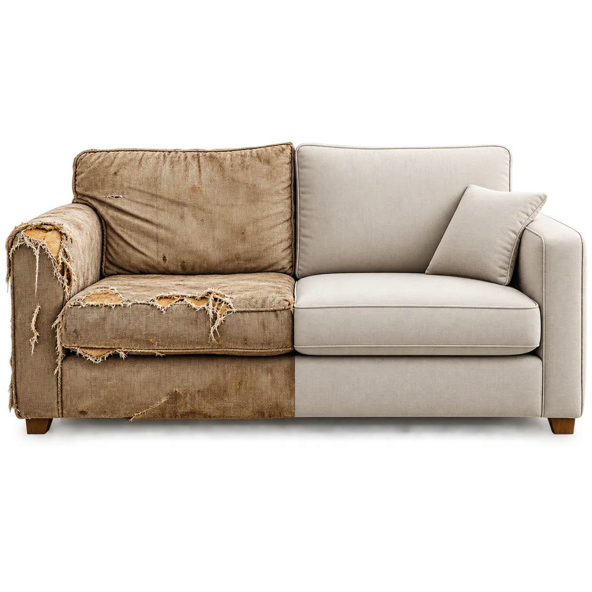
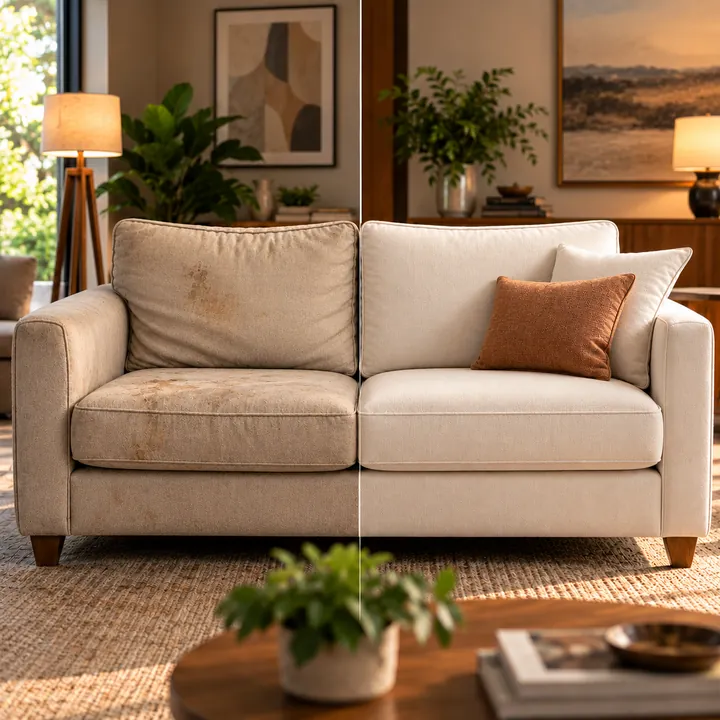
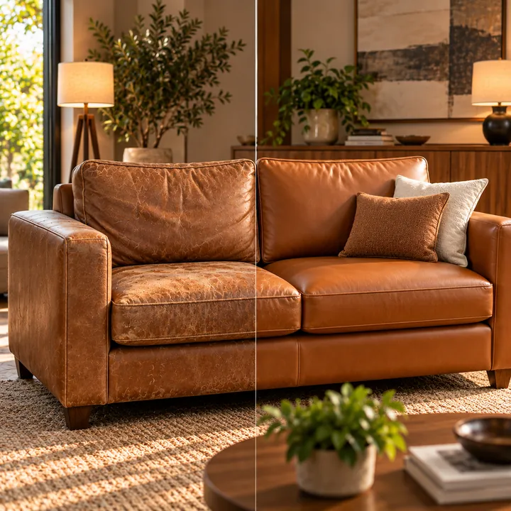
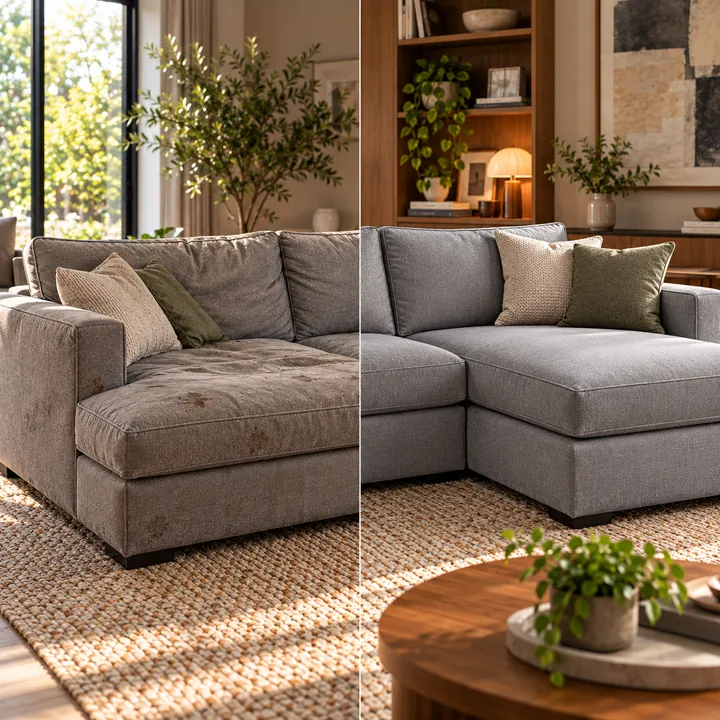
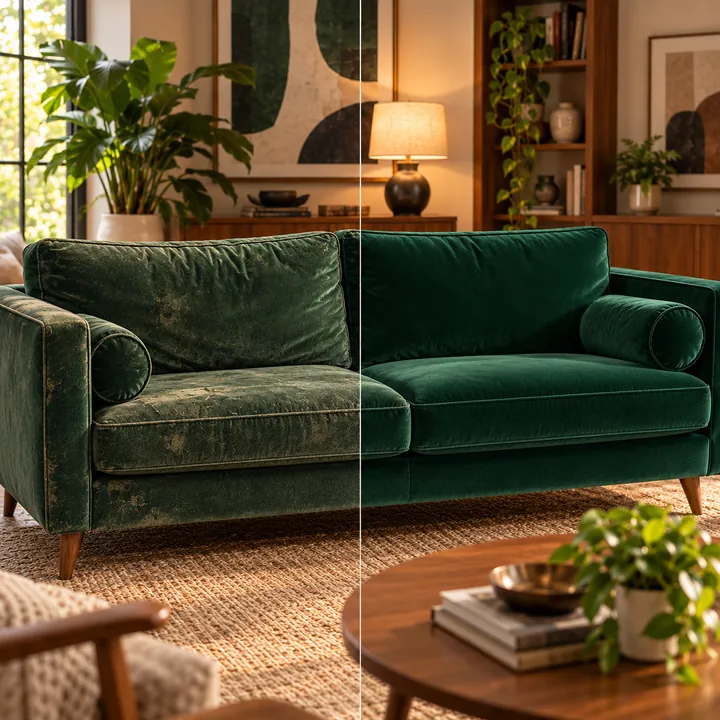
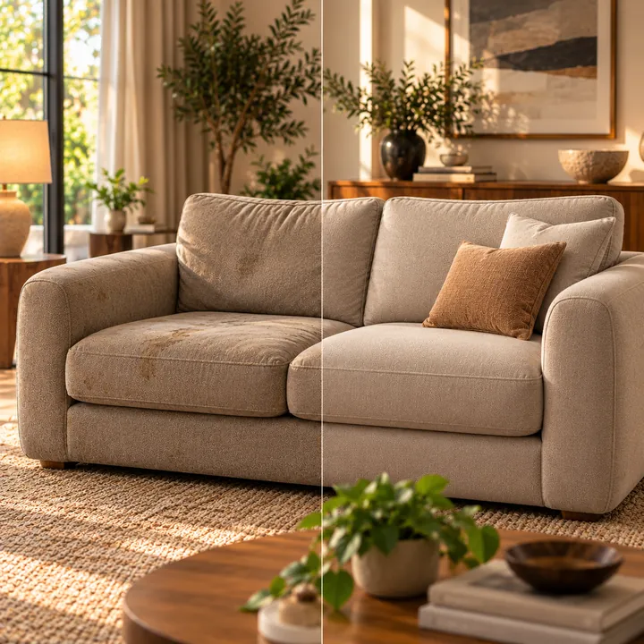

Você não precisa comprar um novo. Dê uma segunda vida ao seu estofado com quem entende do assunto há mais de 10 anos.

Transformamos estofados desgastados em peças que parecem ter acabado de sair da loja, mas com o valor sentimental preservado.

ANTESDEPOIS
ANTESDEPOIS
ANTESDEPOIS
ANTESDEPOIS
ANTESDEPOISRefazer custa menos que comprar outro, preserva o valor sentimental e fica pronto em dias.
Peça um orçamento grátisEstou em choque de tão lindo que ficou meu sofá, o cuidado, ficou do jeito que eu queria, da melhor qualidade, o atendimento da Dona Claudia perfeito, td perfeito desde a negociação até a retirada e a entrega, td muito educados…
Fiquei muito satisfeita com o trabalho desta tapeçaria, a atendente Claudia sempre foi muito amável e atenciosa, os meninos que vieram buscar o meu sofá são ótimos profissionais e super gente boa.. o meu sofá ficou lindo, preço justo. Fizeram um verdadeiro milagre, muito obrigado a todos.
Queria expressar minha gratidão tanto pelo atendimento, mas também pelo serviço prestado! Meu sofá foi para loja de vocês sem condições e após a reforma ele está novo! Super indico, aí tem qualidade, preço e compromisso!!!!
Muito bom o atendimento em todas as etapas do processo. O serviço foi muito bom e a reforma do meu sofá ficou impecável!! Preço muito justo e condições de pagamento parcelado.
Experiência maravilhosa. Conheci a empresa por intermédio de uma amiga e fiquei satisfeitíssima com o trabalho de todos: a Cláudia é muito atenciosa e solícita, o profissionalismo do tapeceiro que fez a reforma é sem igual…
Melhor escolha que fiz, foi escolher a Tapeçaria Frank para reforma do sofá da minha mãe, que além de ter uma qualidade no madeiramento, tem um apego emocional. A Claudia extremamente atenciosamente e comprometida desde o primeiro contato…
Eles são ótimos!! Atendem bem, entregam no dia e sempre tudo muito bem feito. Já contratei o serviço deles mais de uma vez e sempre fico satisfeita. Dessa vez eles arrasaram com as espreguiçadeiras!!! Eles trocaram a tela e fizeram os colchonetes.
Experiência muito positiva, amei o resultado… perfeito o sofá ficou novo e confortável.
Envie uma foto do seu sofá e receba o valor em até 24h, sem compromisso.
Geralmente entregamos a reforma entre 3 a 7 dias úteis, dependendo do tipo de peça e do serviço solicitado. Trabalhamos com prazos rápidos sem comprometer a qualidade.
Sim. Oferecemos retirada e entrega gratuitas em toda a região. Você não precisa se preocupar com transporte.
Somos especialistas em recuperar estofados muito danificados. Avaliamos estrutura, espuma e tecido para restaurar a peça como nova.
O orçamento é grátis e sem compromisso. Envie fotos do seu sofá pelo WhatsApp e respondemos em até 24h.